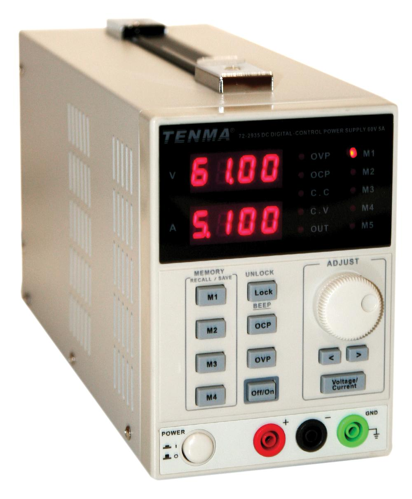

Fontes de Energia
-
Uma fonte de energia (alimentação) é um dispositivo elétrico que fornece energia elétrica a uma carga elétrica. O principal objetivo de uma fonte de energia é converter a corrente elétrica de uma fonte para a tensão, corrente e frequência corretas para alimentar a carga.
- Baterias
- Bateria Alcalina: Comum em dispositivos portáteis como lanternas e brinquedos.
- Bateria de Lítio: Utilizada em dispositivos eletrónicos portáteis como telemóveis e laptops devido à sua alta densidade de energia.
- Bateria de Íon-Lítio (Li-Ion): Popular em dispositivos recarregáveis, oferece alta densidade de energia e longa vida útil.
- Bateria de Níquel-Cádmio (NiCd): Usada em ferramentas elétricas e dispositivos que requerem altas correntes de descarga.
- Bateria de Níquel-Hidreto Metálico (NiMH): Substitui as baterias NiCd em muitas aplicações devido à menor toxicidade.
- Bateria de Chumbo-Ácido: Utilizada em automóveis e sistemas de energia de reserva.
- Pilhas
- Pilha Primária: Pilhas descartáveis, como pilhas alcalinas, não recarregáveis.
- Pilha Secundária: Pilhas recarregáveis, como NiCd, NiMH e Li-Ion.
- Fontes de Energia AC-DC
- Fonte de Energia Linear: Fornece uma tensão estável e filtrada, utilizada em equipamentos sensíveis ao ruído elétrico.
- Fonte de Energia Comutada (SMPS): Mais eficiente que as fontes lineares, utilizada em computadores e dispositivos eletrónicos modernos.
- Geradores
- Gerador de Combustível Fóssil: Utiliza gasolina, diesel ou gás natural para gerar eletricidade, comum em sistemas de energia de backup.
- Gerador de Energia Eólica: Utiliza a energia do vento para gerar eletricidade.
- Gerador de Energia Hidroelétrica: Utiliza a energia da água em movimento para gerar eletricidade.
- Fontes de Energia Renovável
- Painel Solar Fotovoltaico: Converte a luz solar diretamente em eletricidade, usado em sistemas de energia solar.
- Sistema de Energia Eólica: Utiliza turbinas eólicas para converter energia eólica em eletricidade.
- Sistema de Energia Hidrelétrica: Usa a energia da água em movimento para gerar eletricidade.
- Capacitores
- Supercapacitor: Armazena grandes quantidades de energia e pode ser carregado e descarregado rapidamente, usado em aplicações de backup de energia e dispositivos de armazenamento de energia.
- Fontes de Energia Portáteis
- Banco de Energia (Power Bank): Dispositivos portáteis que armazenam energia elétrica para carregar dispositivos móveis.
- Carregadores Solares Portáteis: Utilizam painéis solares para carregar dispositivos portáteis.
- Fontes de Alimentação Ininterrupta (UPS)
- UPS (Uninterruptible Power Supply): Fornece energia de backup em caso de falha de energia, comum em sistemas de computadores e servidores.
- Conversores de Energia
- Conversor DC-DC: Converte uma tensão DC em outra tensão DC diferente, utilizado em dispositivos eletrónicos portáteis e sistemas de energia solar.
- Conversor AC-DC: Converte tensão AC em tensão DC, utilizado em fontes de alimentação de dispositivos eletrónicos.
- Conversor DC-AC (Inversor): Converte tensão DC em tensão AC, utilizado em sistemas de energia solar e baterias de backup.
- Células de Combustível
- Célula de Combustível de Hidrogénio: Converte hidrogénio em eletricidade, utilizado em veículos de célula de combustível e sistemas de energia estacionários.
- Célula de Combustível de Metanol: Utiliza metanol como combustível, utilizada em aplicações portáteis e estacionárias.